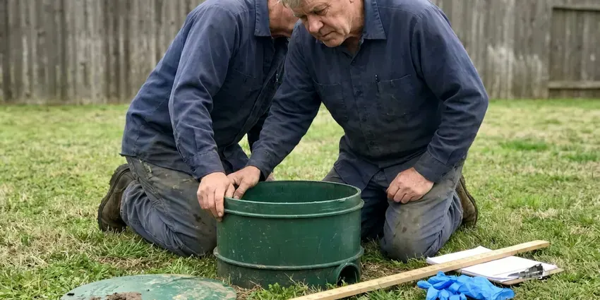

Plumbing Repair in Kingston, RI
A drip under the sink or a water heater that quit, JPN Plumbing fixes plumbing in Kingston, RI without the runaround. Most repairs are done in one visit.
- Licensed Rhode Island Plumbers
- Camera and Leak Diagnostics
- Same Day Appointments
- Background-Checked Techs

Clog or Leak in Kingston, RI?
A slow drip costs more every week it runs, so have it checked now.
Repairs for Every Pipe, Drain and Fixture in Kingston, RI
JPN Plumbing sees the same Rhode Island plumbing problems week after week, mostly mineral scale and pipe stress from foundation movement. Rhode Island has a large share of older housing, including multifamily homes with galvanized supply lines and cast iron drains. Every repair we make in Kingston, RI is sized for those conditions, so a new valve or fitting does not fail the same way twice. Sometimes that means a heavier brass valve instead of plastic.
Our expertise includes:
- Repair water, gas and slab leaks to code
- Repair tank and tankless water heaters, gas or electric
- Find and repair leaks, in the open or behind walls

Additional Plumbing Repair Services in Kingston, RI
We offer expert plumbing repair services across Kingston, RI to stop leaks, clear blockages, and keep every fixture working the way it should.




Septic Tank Repair near Kingston

Customers
Why Choose JPN Plumbing for Plumbing Repair in Kingston, RI?
Private wells serve many rural homes, and owners around Kingston benefit from testing for acidity, iron and other common concerns. Local water and soil wear pipe in predictable ways, from scale-choked valves to pinholes in copper. Our plumbers know them. We repair the cause, which might be pressure over 80 psi or a missing dielectric union, instead of chasing each leak as it appears.
- Flat Pricing, You approve one price before work starts, and the invoice matches it.
- Stocked Vans, Valves, cartridges, heater parts and pipe are on every truck, so most repairs are done the first trip.
- Written Guarantee, Labor is warrantied in writing, and parts carry the manufacturer warranty.
Citywide Coverage
Older neighborhoods with galvanized and cast iron, new subdivisions plumbed in PEX, we repair plumbing in every part of Kingston. A same-day visit is the norm, not the exception.
Experienced Team
Thousands of repaired systems mean a scaled-up pressure regulator or a leaking slab line is familiar work for our plumbers. Every technician trains on current codes and the pipe materials used across Rhode Island.
Safety-First Approach
Water and gas get shut off safely, the work area gets protected and every repair is tested before we pack up. Now and then the job turns up a code problem, such as a missing expansion tank or an unbonded CSST line. You hear about it in plain terms. Then you decide.
Trusted Certified Kingston Plumbing Services Professionals
At JPN Plumbing, we are proud to offer certified plumbing services throughout Kingston, RI. Those papers on the wall mean something. Every repair, install and maintenance visit follows strict safety and quality rules, and the plumbers doing the work carry recognized industry credentials.
Call Us Now PHCC Plumbing Contractor Recognition
PHCC Plumbing Contractor Recognition Better Business Bureau (BBB) Accreditation
Better Business Bureau (BBB) Accreditation Angi Certified Pro
Angi Certified Pro ISO 9001 Quality Management Certification
ISO 9001 Quality Management CertificationWhat We Fix in Kingston, RI Homes
Drain Repairs in Kingston
Slow drains that come back right after a snake usually mean the pipe itself is damaged. Cast iron that has cracked or a run that sags will hold debris no matter how often it is cleared. We run a camera to find the spot, then replace that section or hydro-jet the line if buildup is the only problem. Grease is the usual buildup.

Under-Slab Leak Repair in Kingston, RI
Rhode Island has a large share of older housing, including multifamily homes with galvanized supply lines and cast iron drains. Copper or PEX under the slab can run for decades until a fitting or a rubbed spot gives out. Our leak tech pins down the spot with acoustic and thermal gear, and you get each repair option priced next to the others. Epoxy lining is one choice. Rerouting through the attic is often cleaner.
Slab Leak Repair for Kingston, RI Homes
Basements are standard in most homes, and many rely on sump pumps to manage groundwater during wet seasons. Lines under a slab take the brunt of that movement, and Rhode Island homeowners often find out from a warm floor or a spinning meter. JPN Plumbing finds the leak with electronic equipment before any concrete is cut. Then the choice is a spot repair through the floor or a reroute that abandons the old line. Reroutes skip the jackhammer.
Water Softener Repair in Kingston, RI
Private wells serve many rural homes, and owners around Kingston benefit from testing for acidity, iron and other typical concerns. White crust on faucets and spotty glasses are the first signs a softener has stopped working. The usual causes are a salt bridge in the brine tank or a plugged injector screen. JPN Plumbing repairs the common brands and tests the water hardness before and after the fix so you know it is working again. Resin lasts ten to fifteen years.
Sewer Pipe Repair in Kingston, RI
Clay and Orangeburg laterals crack and separate as the ground shifts, and roots find those gaps within a season or two. A camera and locator mark exactly where and how deep the break sits. Repair options run from a traditional dig to pipe bursting or a cured-in-place liner. We camera it again before backfilling.
Emergency Plumbing Repair in Kingston
Burst pipes and overflowing toilets do not keep business hours, so our phones are answered around the clock. The first job is stopping the water, usually at the main shutoff or the fixture valve. After that we make a lasting repair or a safe temporary one so you have water back tonight and a permanent fix scheduled. Keep a shutoff key handy.
Gas Line Leak Repair in Kingston
Gas work is the one job no homeowner should try. Smell sulfur or hear hissing, and the right move is to walk out and call from the driveway. JPN Plumbing finds and fixes gas leaks in Kingston with a combustible gas detector, then pressure tests the line to code before the meter is turned back on. Flex connectors fail most often.

Water Heater Parts Repair in Kingston
Rumbling or popping from a tank means sediment on the bottom. A rotten-egg smell in the hot water usually means the anode rod is reacting with the water. We replace thermocouples, thermostats, elements, gas valves, anode rods and relief valves from truck stock, which covers the large majority of tank repairs we see in a year. A tank leaking at the seam is a different story. No part fixes that, and we tell you plainly.
Plumbing Repair Near Me in Kingston, RI
Local matters with plumbing repair in Kingston, RI because the plumber who knows the area knows the pipe. JPN Plumbing works your neighborhood every week, not through a call center three states away. Wait times stay short. You call, a dispatcher who knows the streets books you, and a plumber shows up in a marked truck with your work order.
Searching for plumbing repair near me in Kingston usually means something is leaking now. JPN Plumbing keeps plumbers spread across town, so nobody is far away. A plumber on the next street over can be at your door in under an hour on a good day. Better than a Thursday appointment.
JPN Plumbing at a Glance
- Fully licensed plumbing team covering Kingston, RI
- 24/7 emergency service with same-day scheduling
- Clear written estimates, no hidden fees
- 4.8-star rated by 684+ Rhode Island customers
Kingston Map
Kingston Information
- Population
- 7,825
- Area codes
- Local
- Service area
- Kingston and towns within a 40 mile drive
- Nearby
- Wakefield-Peace Dale, Newport, Newport East, Westerly
Basements are standard in most homes, and many rely on sump pumps to handle groundwater during wet seasons. Ground movement puts stress on buried supply and sewer lines in Kingston, RI, and scale builds up in valves at the same time. Catching both early keeps a small repair small.
Expert Services
Reach out to JPN Plumbing for reliable plumbing work done by licensed pros in Kingston, RI.
Our Specialized Plumbing Services in Kingston, RI
At JPN Plumbing, we handle the full list of plumbing services across Kingston, RI. We go from leak detection all the way to full system installations, for homes and commercial buildings, and we do it quickly at a fair price. Explore our core services below:


How a Plumbing Repair Visit Works in Kingston, RI
Diagnose first, price second, repair third.
Request a Visit
Call (401) 364-2507 or fill out the online form with a quick note on what is wrong. A dispatcher sets up a time that fits your day.
Diagnosis & Estimate
A licensed plumber comes to your Kingston home, finds the cause and gives you a written price. You approve the number before any work.
The Repair
We make the repair with quality parts and follow local code. The fix is tested before we pack up.
Frequently Asked Questions About Plumbing Repair in Kingston
Simple repairs such as a faucet cartridge, toilet fill valve or angle stop usually run $150 to $400. Water heater part repairs often land between $200 and $600. Slab leak and sewer repairs can range from $1,500 to $6,000 or more, depending on access and the repair method we use. Firm price first.
That depends on the part and the condition of the pipe around it. JPN Plumbing installs commercial-grade parts and puts a warranty on the labor.
Private wells serve many rural homes, and owners around Kingston benefit from testing for acidity, iron and other typical concerns. Hard water leaves scale inside valves, fixtures and water heaters. Basements are standard in most homes, and many rely on sump pumps to manage groundwater during wet seasons.
Drain strainers and keeping grease out of the sink handle most clog prevention. Flush the water heater once a year to clear sediment, and check under every sink for slow drips that rot the cabinet floor. Shutting off outdoor spigots and insulating exposed lines are easy steps that protect homes around Kingston from burst pipes. Foam sleeves on exposed pipe are cheap insurance.
Usually, yes. JPN Plumbing finds hidden leaks with acoustic listening equipment and thermal imaging, which means one small opening instead of a torn-up floor.
Sometimes, for a plunger job or a new showerhead. For most repairs, though, one wrong turn of a wrench can turn a drip into a flood.
Moen, Delta, Kohler and American Standard on the fixture side, plus Rheem, Bradford White, Navien and Rinnai on the heater side. We stock common parts for each.
Dripping faucets and drains that stay slow are the easy ones to spot. Gurgling toilets, wet spots on walls or floors and a sudden jump in the water bill are harder to ignore and usually mean a bigger problem. A sewer smell from a drain is another.
What People Are Saying About Our Plumbing Experts?

Patricia H.
We had a slab leak that two other companies could not find. JPN Plumbing located it in under an hour with a listening device. They rerouted the line through the attic instead of breaking up the floor, so we kept our kitchen tile.
Slab Leak Repair · Warwick, RI
Tyler J.
We bought a taller comfort height toilet for my dad, who just had knee surgery. The plumber pulled the old one, found the flange was cracked, and replaced it before setting the new bowl. Took about two hours.
Toilet Installation · Wakefield-Peace Dale, RIDaniel K.
A pipe burst in the garage ceiling at 11 at night. Someone answered on the second ring, and the plumber was in my driveway about fifty minutes later. He shut off the main, cut out the split section, and had water back on before 2 am.
Emergency Plumbing · Newport East, RIKaren W.
After our third pinhole leak in copper, we stopped patching. JPN Plumbing gave us a written plan room by room and repiped the house in PEX while we stayed in it. The crew covered our floors every morning and cleaned up every night.
Repiping · Warwick, RI
Lisa C.
Water was pouring out from under the washing machine on a holiday weekend. JPN Plumbing talked me through closing the valves over the phone and had a plumber at the house within ninety minutes. It was a burst fill hose.
Emergency Plumbing · Newport East, RI
James P.
Our restaurant had a slow leak at the hand sink that was rotting the cabinet base. JPN Plumbing came in at six in the morning before prep, replaced the trap and both supply lines, and was packed up before my first cook clocked in.
Commercial Plumbing · Newport, RI